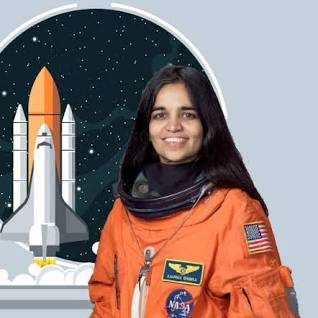

Tribute to Kalpana Chawla
Early life and education:
KKalpana Chawla was an Indian-American astronaut who was born on March 17, 1962, in Karnal, Haryana, India.During her earlier education in India, Chawla attended Tagore Baal Niketan Senior Secondary School, Karnal.
Chawla obtained a degree in aeronautical engineering from Punjab Engineering College.
Career:
- Kalpana Chawla's journey to space began with her joining NASA in 1995. She first flew on the Space Shuttle Columbia flight STS-87 in 1997 as a mission specialist and primary robotic arm operator.
- On her first mission, Chawla traveled 10.4/6.5 million miles in 252 orbits of the earth, logging more than 376 hours (15 days and 16 hours) in space.
- Her dedication to science and her passion for exploring the unknown helped advance our understanding of space and its effects on the human body.
Second space mission and death:
- In 2000, Chawla was selected for her second flight as part of the crew of STS-107.
- When Columbia re-entered the atmosphere of Earth, the damage allowed hot atmospheric gases to penetrate and destroy the internal wing structure, which caused the spacecraft to become unstable and break apart.
- Tragically, on February 1, 2003, the Space Shuttle Columbia disintegrated during re-entry into the Earth's atmosphere, resulting in the loss of Kalpana Chawla and her fellow crew members. Their sacrifice will forever be remembered, and their legacy will continue to inspire future generations of explorers.
Awards:
- Awards Congressional Space Medal of Honor
- NASA Distinguished Service Medal
- NASA Space Flight Medal
Died:
1 February 2003 (aged 40) Aboard Space Shuttle Columbia over Texas, U.S. in the Space Shuttle Columbia disaster.
Kalpana Chawla's determination, courage, and intelligence have left an indelible mark on the world of space exploration. Her achievements continue to motivate and empower individuals across the globe to pursue their dreams relentlessly.
This tribute page is dedicated to the memory of Kalpana Chawla, a true inspiration and a symbol of human perseverance.
"The path from dreams to success does exist. May you have the vision to find it, the courage to get on to it, and the perseverance to follow it." - Kalpana Chawla